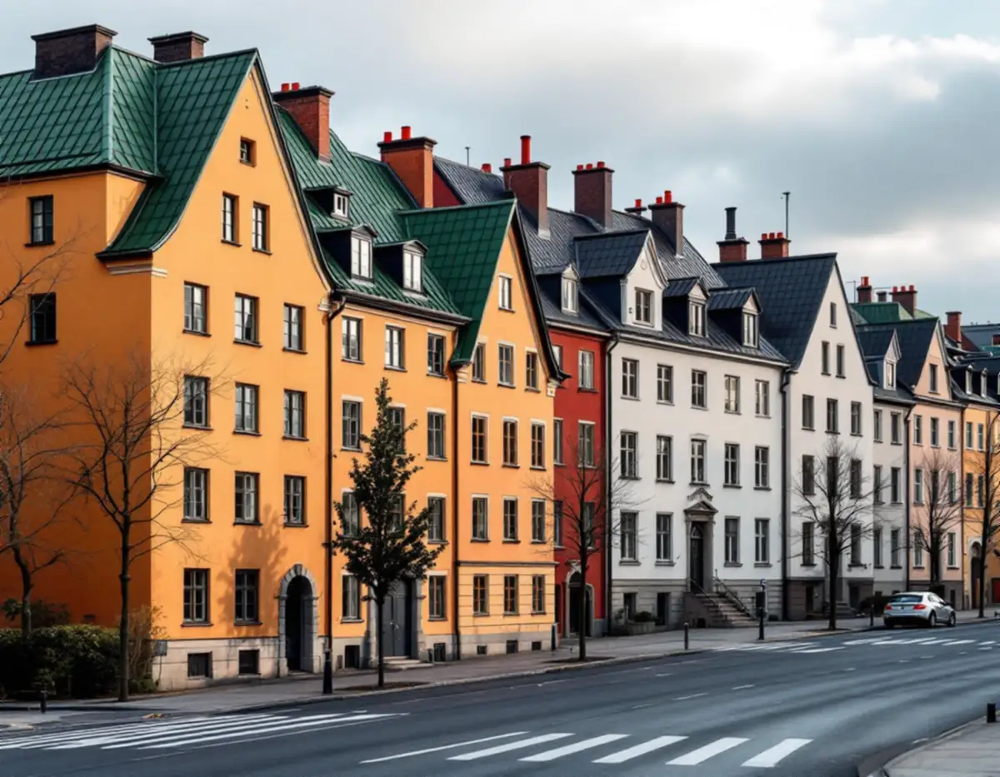
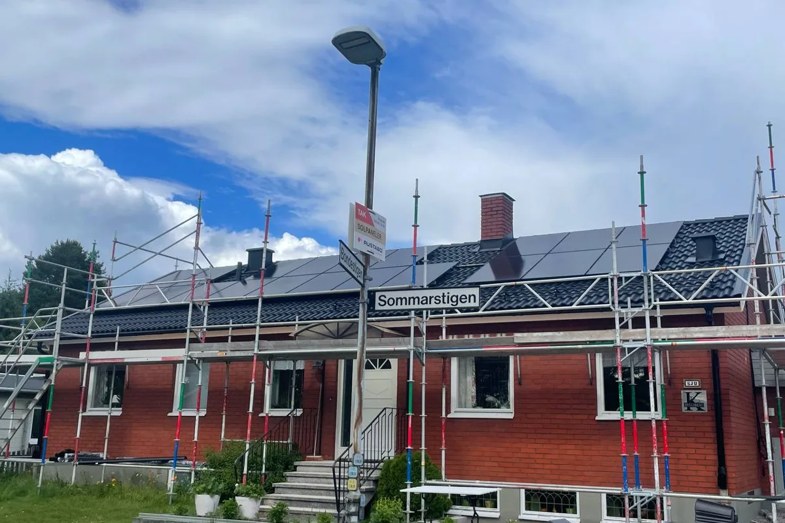
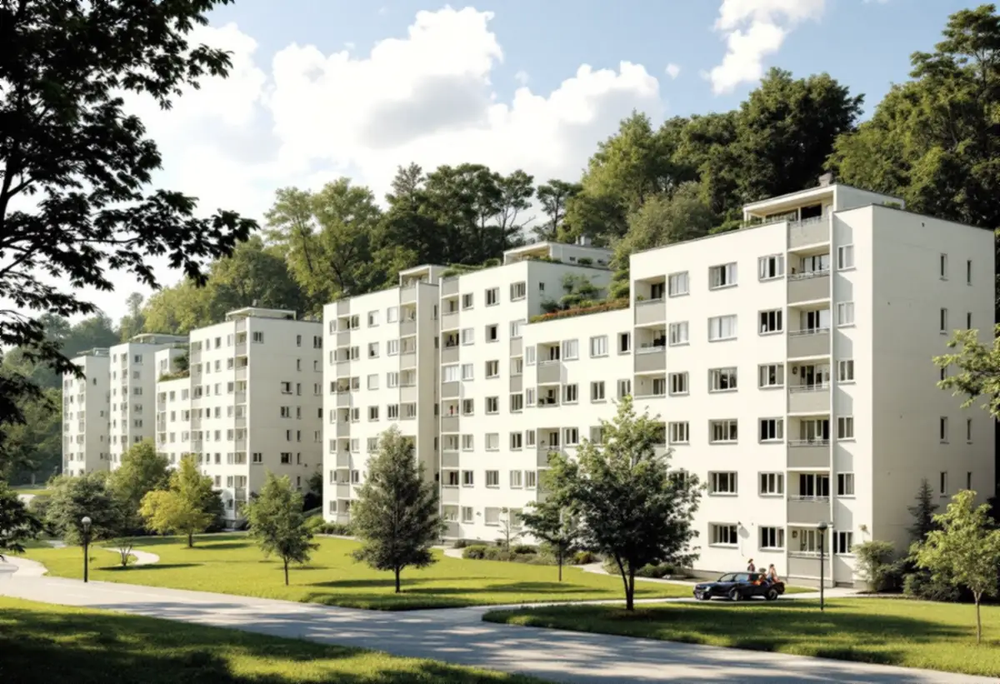

Besök
Gratis besök på taket och på vinden tillsammans med styrelsen.

På Kungsholmen finns drygt 44 500 bostäder, och nästan sju av tio är bostadsrätter.
Skicka gärna en bild på taket.
Något blev fel. Kontrollera uppgifterna eller ring 08 12 410 276.
Vi tittar på jobbet på plats innan du får offert.
Du ser vad som ingår och vad det kostar.
Vi drar av ROT direkt och sköter ansökan.
Geal Entreprenad AB, Bromma. Org.nr 559303-7566.

Den som beställer en takrenovering här är därför oftast en bostadsrättsförening. Taken i stenstaden är branta och plåttäckta, och i Fredhäll och Kristineberg står funkishus från 1930-talet. Båda typerna har sina egna regler när kulör eller material ska ändras.
Stadens statistik för 2024 visar 44 554 bostäder i Kungsholmens stadsdelsområde. 30 598 av dem är bostadsrätter, och bara 337 ligger i småhus. Det betyder att nästan alla tak på Kungsholmen ägs av en förening eller en fastighetsägare, inte av den som bor under dem.
Kungsholmens kvarter är gamla. När staden beskriver riksintresset nämns bland annat att ett kvarter omfattas av en stadsplan för hela Kungsholmen från 1880. Staden räknar Kungsholmen till den klassiska stenstaden: den täta kvartersstaden med bebyggelse från 1870–1930.

Staden beskriver stenstadens tak som sluttande, oftast plåttäckta och med en lutning på upp till 45 grader från fasaden. Tillsammans bildar de ett karaktäristiskt taklandskap. Mot gatan har husen ofta en markerad takfot och ibland en attikavåning.
En takrenovering på ett sådant hus handlar sällan om att byta material. Oftare är det plåten som behöver målas om, falsarna som behöver tätas eller underlaget under en del av taket som behöver bytas. Runt huvar, skorstenar och takfönster sitter de detaljer som läcker först.
Omkring 1930 började nya stadsdelar byggas efter funktionalismens ideal. I innerstaden var det framför allt i utkanterna, till exempel i Fredhäll och Kristineberg på Kungsholmen. Fristående huskroppar med öppna, gröna gårdar blev idealet.
Husen från den tiden har andra tak än stenstaden, och de ska renoveras så att de behåller sin form. Vi börjar med att ta reda på hur taket är uppbyggt – från vinden och med gamla ritningar om föreningen har dem – innan vi föreslår en metod.
För flerbostadshus behövs bygglov när en ändring görs på fasad eller tak som vetter mot allmän plats. Staden räknar byte av kulör eller material på taket som en fasadändring. Ska ett grönt plåttak bli svart mot gatan behöver föreningen alltså söka bygglov, och kulören ska anges enligt NCS-systemet.
Mot gården kan en ändring vara lovfri om vissa förutsättningar är uppfyllda. Är byggnaden särskilt kulturhistoriskt värdefull gäller dock utökad lovplikt, och Stadsmuseets klassificeringskarta ger en första indikation. Målas taket om i samma kulör ändras inte utseendet.
Styrelsen behöver kunna jämföra och förklara beslutet för medlemmarna. Efter ett gratis besök på taket och vinden får föreningen ett skriftligt kostnadsförslag med foton av skadorna, en beskrivning av varje moment och vad som kan vänta.
Behövs bygglov tar vi fram en takplan som visar det befintliga taket och det som ska ändras, och hjälper till med material- och kulörbeskrivningen. Läs mer om plåttak och takbesiktning.
Ett brant plåttak i fem eller sex våningar kan inte renoveras från en stege. Beroende på vad som ska göras behövs ställning mot gatan, skyddsräcken vid takfoten eller arbete från gårdssidan. Gångbanan under ska skyddas, och de boende behöver veta när balkonger och fönster mot taket påverkas.
Vi planerar etableringen tillsammans med styrelsen innan arbetet börjar och lämnar ett underlag som föreningen kan sätta upp i trapphuset. Då vet alla när arbetet pågår och vad som gäller.
Efter arbetet går vi igenom taket med styrelsen, visar foton från varje moment och lämnar en beskrivning av vad som är gjort. Den kan läggas in i underhållsplanen, så att nästa styrelse vet när taket senast renoverades och vad som bör ses över härnäst.
Gratis besök på taket och på vinden tillsammans med styrelsen.
Skriftligt kostnadsförslag med foton och beskrivning av varje moment.
Takplan och kulörbeskrivning om kulör eller material ändras mot gatan.
Ställning, tillträde och information till de boende.
Ommålning, tätning eller byte av plåt och beslag.
Foton och beskrivning till föreningens underhållsplan.
Bor du i bostadsrätt ger arbete på husets tak inget rotavdrag enligt Skatteverket. Avdraget i en bostadsrätt gäller arbete inne i lägenheten som du själv ansvarar för enligt stadgarna, och taket är föreningens sak. Det är föreningen som beställer och betalar.
Bara 337 bostäder på Kungsholmen ligger i småhus, de flesta på Stora Essingen. Äger du ett småhus på Kungsholmen räknar Skatteverket däremot reparation och byte av takpannor och hängrännor som rotarbete. Avdraget är 30 procent av arbetskostnaden, högst 50 000 kronor per person och år, och Geal drar det direkt på fakturan. Läs mer under rotavdrag för takarbete.
Kostnaden för en takrenovering på Kungsholmen påverkas av takets yta och lutning, om plåten ska målas eller bytas, antalet huvar, skorstenar och takfönster, ställning mot gatan och om bygglovshandlingar behövs. Läs mer om vad en takrenovering kostar.
Takbyte, besiktning och plåtarbeten.
Takläggare på Kungsholmen →Så fungerar en omläggning.
Takrenovering och takomläggning →Det här styr priset.
Vad kostar en takrenovering? →Räkna på takytan och ROT.
Takbyte-kalkylator →Stenstad, Röda Bergen och föreningarnas tak.
Takrenovering i Vasastan →Trädgårdsstäder, tegel och funkistak.
Takrenovering i Bromma →Råsunda, Stocksundstorp och Råsta.
Takrenovering i Solna →Eller ring 08 12 410 276, mån–fre 08–17.
Skicka gärna en bild på taket.
Något blev fel. Kontrollera uppgifterna eller ring 08 12 410 276.